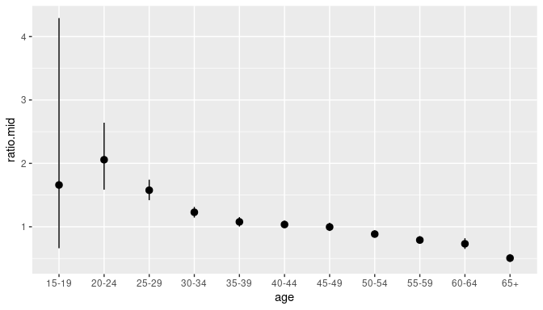

Package rvecs
John Bryant
vig1_overview.Rmd1 Aims of rvecs
Many modern statistical methods, particularly Bayesian methods, produce random draws from a distribution. A exceptionally useful feature of these draws is that they can be used to make inferences about derived quantities. The procedure is:
- Step 1. Calculate the derived quantity for each of the random draws.
- Step 2. Summaries the distribution of these derived quantities.
If, for instance, we have randoms draws of age-specific mortality rates, and we want make inferences about life expectancy (a summary indicator for mortality rates), then we proceed as follows:
- Step 1. Derive life expectancy for each set of age-specific mortality rates.
- Step 2. Calculate means, medians, or other statistics for these life expectancies.
For more on the theory behind manipulating random draws, and for an argument that R needs high-level tools to help with this manipulation, see Kerman and Gelman (2007).
Package rvec provides tools for working with random draws. The draws are held in a structure called an rvec, which can, for many purposes, be treated like an ordinary R vector, and manipulated using ordinary base R and tidyverse code. rvec also contains functions for summarizing across random draws.
2 Examples
2.1 Toy example
We begin with a toy example, to illustrate basic functionality.
The header <rvec_dbl<3>[1]> indicates that rvec theta holds three random draws, each of which is a double, and that, regarded as a vector, theta has length 1.
We can perform standard mathematical operations:
theta^2 + 1
#> <rvec_dbl<3>[1]>
#> [1] 10,2,1theta recycles to match the length of other vectors,
theta + c(1, -1)
#> <rvec_dbl<3>[2]>
#> [1] 4,2,1 2,0,-1including other rvecs,
beta <- rvec(list(c(-0.2, 0.4, 0.1),
c(-0.1, 0.1, 0.6)))
beta
#> <rvec_dbl<3>[2]>
#> [1] -0.2,0.4,0.1 -0.1,0.1,0.6
theta + beta
#> <rvec_dbl<3>[2]>
#> [1] 2.8,1.4,0.1 2.9,1.1,0.6To summarize across random draws, we use draws_* functions, e.g.
draws_mean(beta)
#> [1] 0.1 0.22.2 Divorce rates
Our next example is more involved, and includes the use of some standard tidyverse packages.
We analyse a posterior sample from a Bayesian model of divorce rates in New Zealand. The rates are divorces per thousand people per year, disaggregated by age and sex.
divorce
#> # A tibble: 22,000 × 4
#> age sex draw rate
#> <fct> <chr> <int> <dbl>
#> 1 15-19 Female 1 0.0462
#> 2 15-19 Female 2 0.0369
#> 3 15-19 Female 3 0.0448
#> 4 15-19 Female 4 0.0411
#> 5 15-19 Female 5 0.0333
#> 6 15-19 Female 6 0.0511
#> 7 15-19 Female 7 0.0249
#> 8 15-19 Female 8 0.0280
#> 9 15-19 Female 9 0.0339
#> 10 15-19 Female 10 0.0425
#> # ℹ 21,990 more rowsFirst we convert the data from a ‘data base’ format, where each row describes a single draw, to an rvec format, where multiple draws are folded into an rvec.
divorce_rv <- divorce %>%
collapse_to_rvec(value = rate)
divorce_rv
#> # A tibble: 22 × 3
#> age sex rate
#> <fct> <chr> <rdbl<1000>>
#> 1 15-19 Female 0.036 (0.019, 0.068)
#> 2 20-24 Female 0.67 (0.58, 0.78)
#> 3 25-29 Female 3.2 (3, 3.4)
#> 4 30-34 Female 5.8 (5.5, 6.1)
#> 5 35-39 Female 6.5 (6.2, 6.9)
#> 6 40-44 Female 7.1 (6.8, 7.4)
#> 7 45-49 Female 7.2 (6.9, 7.6)
#> 8 50-54 Female 6 (5.8, 6.3)
#> 9 55-59 Female 4.4 (4.2, 4.7)
#> 10 60-64 Female 2.7 (2.5, 3)
#> # ℹ 12 more rowsWhen the number of draws is large, the print method displays <median> (<2.5% quantile>, <97.5% quantile>) for the distribution, rather than the individual draws.
We define the ‘total divorce rate’ to be the number of divorces that a person would expect to experience over their lifetime under prevailing divorce rates. The total divorce rate can be calculated as
divorce_rv %>%
group_by(sex) %>%
summarise(TDR = sum(rate) * 5 / 1000)
#> # A tibble: 2 × 2
#> sex TDR
#> <chr> <rdbl<1000>>
#> 1 Female 0.22 (0.22, 0.23)
#> 2 Male 0.23 (0.22, 0.23)We summarize across draws using draws_ci(), which, by default, calculates medians and 95% credible intervals. Function draws_ci() returns a tibble rather than a vector, so, following standard mutate rules, we do not explicitly create new columns.
divorce_rv %>%
group_by(sex) %>%
summarise(tdr = sum(rate) * 5 / 1000) %>%
mutate(draws_ci(tdr))
#> # A tibble: 2 × 5
#> sex tdr tdr.lower tdr.mid tdr.upper
#> <chr> <rdbl<1000>> <dbl> <dbl> <dbl>
#> 1 Female 0.22 (0.22, 0.23) 0.218 0.223 0.228
#> 2 Male 0.23 (0.22, 0.23) 0.221 0.226 0.231Next we calculate the ratio between female and male divorce rates,
divorce_ratio <- divorce_rv %>%
pivot_wider(names_from = sex, values_from = rate) %>%
mutate(ratio = Female / Male) %>%
mutate(draws_ci(ratio))and graph the result
ggplot(divorce_ratio,
aes(x = age,
ymin = ratio.lower,
y = ratio.mid,
ymax = ratio.upper)) +
geom_pointrange()
3 Structure of rvecs
The class "rvec" has four subclasses:
-
"rvec_dbl", which holds doubles, e.g.3.142,-1.01. -
"rvec_int", which holds integers, e.g.42,-1. -
"rvec_lgl", which holdsTRUE,FALSE, andNA. -
"rvec_chr", which hold characters, e.g."a","Thomas Bayes".
Internally, an rvec is a matrix, with each row representing one unknown quantity, and each column representing one draw from the joint distribution of the unknown quantities,
| Draw 1 | Draw 2 | \(\dots\) | Draw \(n\) | |
|---|---|---|---|---|
| Quantity 1 | \(\theta_{11}\) | \(\theta_{12}\) | \(\dots\) | \(\theta_{1n}\) |
| Quantity 2 | \(\theta_{21}\) | \(\theta_{22}\) | \(\dots\) | \(\theta_{2n}\) |
| \(\vdots\) | \(\vdots\) | \(\vdots\) | \(\ddots\) | \(\vdots\) |
| Quantity \(m\) | \(\theta_{m1}\) | \(\theta_{m2}\) | \(\dots\) | \(\theta_{mn}\) |
Ordinary functions are applied independently to each column. For instance, calling sum() on an rvec creates a new rvec with structure
| Draw 1 | Draw 2 | \(\dots\) | Draw \(n\) | |
|---|---|---|---|---|
| Quantity 1 | \(\sum_{i=1}^m\theta_{i1}\) | \(\sum_{i=1}^m\theta_{i2}\) | \(\dots\) | \(\sum_{i=1}^m\theta_{in}\) |
Functions with a draws_ prefix are applied independently to each row. For instance, calling draws_mean() on an rvec creates a new numeric vector with structure
| Value | |
|---|---|
| Quantity 1 | \(\frac{1}{n}\sum_{j=1}^n\theta_{1j}\) |
| Quantity 2 | \(\frac{1}{n}\sum_{j=1}^n\theta_{2j}\) |
| \(\vdots\) | \(\vdots\) |
| Quantity \(m\) | \(\frac{1}{n}\sum_{j=1}^n\theta_{mj}\) |
Each rvec holds a fixed number of draws. Two rvecs can only be used together in a function if
- both rvecs have the same number of draws, or
- one or more rvecs have a single draw.
4 Creating rvecs
An individual rvec can be created from a list of vectors,
a matrix,
x <- matrix(rnorm(2000), nrow = 2)
rvec(x)
#> <rvec_dbl<1000>[2]>
#> [1] -0.042 (-2, 1.9) -0.024 (-2, 2.1)or an atomic vector
Function rvec() chooses from classes "rvec_dbl", "rvec_int", "rvec_lgl", and "rvec_chr", based on the input. To enforce a particular class, use function rvec_dbl(), rvec_int(), rvec_lgl(), or rvec_chr(),
x <- list(1:3)
rvec(x)
#> <rvec_int<3>[1]>
#> [1] 1,2,3
rvec_dbl(x)
#> <rvec_dbl<3>[1]>
#> [1] 1,2,3
rvec_chr(x)
#> <rvec_chr<3>[1]>
#> [1] "1","2","3"When the raw data take the form of a database with one draw per row, the most efficient way to create rvecs is to use collapse_to_rvec(). See Section 2.2 for an example.
Section 6 shows how to create an rvec consisting of draws from a standard probability distribution.
5 Mathematical and logical operations
Mathematical and logical operations are applied independently to each draw.
x <- rvec(list(c(TRUE, FALSE),
c(TRUE, TRUE)))
all(x)
#> <rvec_lgl<2>[1]>
#> [1] T,F
any(x)
#> <rvec_lgl<2>[1]>
#> [1] T,TUser-defined functions that consist entirely of standard mathematical and logical operations should just work.
logit <- function(p) log(p / (1-p))
tibble(
x = rvec(list(c(0.2, 0.4),
c(0.6, 0.9))),
y = logit(x)
)
#> # A tibble: 2 × 2
#> x y
#> <rdbl<2>> <rdbl<2>>
#> 1 0.2,0.4 -1.386,-0.4055
#> 2 0.6,0.9 0.4055,2.197Multiplying an rvec by a matrix produces an rvec,
rvec contains a suite of functions for summarising weighted data:
All of these are built on functions from package matrixStats.
6 Probability distributions
Standard R probability functions such as dnorm() or rbinom() do not allow rvec arguments. Package rvec provides modified functions that do. For instance,
y <- rvec(list(c(-1, 0.2),
c(3, -7)))
mu <- rvec(list(c(0, 1),
c(0, -1)))
dnorm_rvec(y, mean = mu, sd = 3)
#> <rvec_dbl<2>[2]>
#> [1] 0.1258,0.1283 0.08066,0.018
rbinom_rvec(n = 2, size = round(y+10), prob = 0.8)
#> <rvec_int<2>[2]>
#> [1] 7,6 10,2The return value from an rvec probability function is an rvec if and only if at least one argument to the function is an rvec – with one exception. The exception is random variate functions where a value is suppplied for a special argument called n_draw. When a value for n_draw is supplied, the return value is an rvec with n_draw draws,
rnorm_rvec(n = 3, mean = 100, sd = 10, n_draw = 2)
#> <rvec_dbl<2>[3]>
#> [1] 105.2,113.9 88.88,108.2 100.3,97.04This is a convenient way to create inputs to a simulation.
7 Manipulating rvecs
7.1 Subsetting
Standard R ways of selecting elements from vectors work with rvecs.
x <- rvec(list(a = 1:2,
b = 3:4,
c = 5:6))
x[1]
#> <rvec_int<2>[1]>
#> a
#> 1,2
x[c("a", "c")]
#> <rvec_int<2>[2]>
#> a c
#> 1,2 5,6
x[c(TRUE, FALSE, TRUE)]
#> <rvec_int<2>[2]>
#> a c
#> 1,2 5,6The third case above is an example the common R idiom x[y], where a logical vector y is used to pick out elements of the vector x. The idiom also works when y is a logical rvec,
x <- rvec(list(1:2,
3:4,
5:6))
y <- rvec(list(c(TRUE, TRUE),
c(TRUE, FALSE),
c(FALSE, FALSE)))
x
#> <rvec_int<2>[3]>
#> [1] 1,2 3,4 5,6
y
#> <rvec_lgl<2>[3]>
#> [1] T,T T,F F,F
x[y]
#> <rvec_int<2>[1]>
#> [1] 1,2or
x[x <= 3] ## create 'y' on the fly
#> <rvec_int<2>[1]>
#> [1] 1,2To implement the idiom, a convention is needed to deal with varying values within the same element of y. For instance, in the sample above, we need a way of handling the second element of y, which consists of one TRUE and one FALSE. The convention used by rvec is that y picks out an element of x if all draws of y for that element are TRUE.
Looking across multiple draws of y is unavoidable when implementing x[y]. However, it is typically not the behavior we want when working with multiple draws. Instead, we usually want to process each draw independently. This can be done using function if_else_rvec(), introduced in Section 7.2.
7.2 If-Else
The standard R function ifelse() does not work with rvecs. The tidyverse equivalent works when the true, false, and missing arguments are rvecs,
x <- rvec(list(1:2,
3:4))
if_else(condition = c(TRUE, FALSE),
true = x,
false = -x)
#> <rvec_int<2>[2]>
#> [1] 1,2 -3,-4It does not, however, work when the condition argument is an rvec. For that case we need the rvec function if_else_rvec(),
if_else_rvec(x <= 2, x, 2)
#> <rvec_dbl<2>[2]>
#> [1] 1,2 2,2Function if_else_rvec() can be used to independently transform or recode values across different draws,
7.3 Combining
The standard R concatenation function, c(), works with rvecs,
x1 <- rvec(list(c(0.1, 0.2),
c(0.3, 0.4)))
x2 <- rvec(list(c(0.5, 0.6),
c(0.7, 0.8)))
c(x1, x2)
#> <rvec_dbl<2>[4]>
#> [1] 0.1,0.2 0.3,0.4 0.5,0.6 0.7,0.8Unfortunately, cbind() and rbind() cannot be made to work properly on raw rvecs,
rbind(x1, x2)
#> data
#> x1 numeric,4
#> x2 numeric,4
cbind(x1, x2)
#> x1 x2
#> data numeric,4 numeric,4cbind() (but not rbind()) works if the rvecs are contained in data frames
df1 <- data.frame(x1)
df2 <- data.frame(x2)
cbind(df1, df2)
#> x1 x2
#> 1 0.1,0.2 0.5,0.6
#> 2 0.3,0.4 0.7,0.8Tidyverse equivalents such as dplyr::bind_rows(), dbplyr::bind_cols(), vctrs::vec_cbind(), and vctrs::vec_rbind() do work with rvecs,
library(vctrs, warn.conflicts = FALSE)
vec_cbind(x1, x2)
#> New names:
#> • `` -> `...1`
#> • `` -> `...2`
#> ...1 ...2
#> 1 0.1,0.2 0.5,0.6
#> 2 0.3,0.4 0.7,0.8Base R function sapply() does not work with rvecs (unless simplify is set to FALSE). rvec therefore supplies a function called map_rvec() (based on functions in package purrr) that does the same job:
7.4 Coercing
Function as.matrix() returns the data underlying an rvec.
m <- matrix(1:6, nr = 2)
m
#> [,1] [,2] [,3]
#> [1,] 1 3 5
#> [2,] 2 4 6
x <- rvec(m)
x
#> <rvec_int<3>[2]>
#> [1] 1,3,5 2,4,6
as.matrix(x)
#> [,1] [,2] [,3]
#> [1,] 1 3 5
#> [2,] 2 4 6Function as_list_col() returns a list of vectors
as_list_col(x)
#> [[1]]
#> [1] 1 3 5
#>
#> [[2]]
#> [1] 2 4 6Functions such as point_interval in package ggdist accept lists of vector. A good way to access the sophisticated plotting facilities in ggdist, or in packages such as tidybayes and bayesplot is to use as_list_col() to convert an rvec to a list column.
Function expand_from_rvec() is the inverse of function collapse_to_rvec(), introduced in Section 2.2.
divorce %>%
head(2)
#> # A tibble: 2 × 4
#> age sex draw rate
#> <fct> <chr> <int> <dbl>
#> 1 15-19 Female 1 0.0462
#> 2 15-19 Female 2 0.0369
divorce %>%
collapse_to_rvec(values = rate) %>%
head(2)
#> # A tibble: 2 × 3
#> age sex rate
#> <fct> <chr> <rdbl<1000>>
#> 1 15-19 Female 0.036 (0.019, 0.068)
#> 2 20-24 Female 0.67 (0.58, 0.78)
divorce %>%
collapse_to_rvec(values = rate) %>%
expand_from_rvec() %>%
head(2)
#> # A tibble: 2 × 4
#> age sex draw rate
#> <fct> <chr> <int> <dbl>
#> 1 15-19 Female 1 0.0462
#> 2 15-19 Female 2 0.03698 Summarising distributions
Most functions in rvec are concerned with deriving random vectors from other random vectors: that is, with the column-wise calculations described in Section 3. But once we have derived the random vectors, we typically want to summarise them, using statistics such as means or quantiles: that is, we want to carry out row-wise calculations.
The functions for carrying out row-wise calculations on rvecs are:
- [draws_all()]
- [draws_any()]
- [draws_median()]
- [draws_mean()]
- [draws_mode()]
- [draws_ci()]
- [draws_quantile()]
- [draws_fun()]
Internally, most of these functions call functions from matrixStats, which makes them fast.
For most purposes, [draws_ci()], which calculates credible intervals, is the most useful of the draws functions,
divorce_rv <- divorce %>%
collapse_to_rvec(value = rate)
divorce_rv
#> # A tibble: 22 × 3
#> age sex rate
#> <fct> <chr> <rdbl<1000>>
#> 1 15-19 Female 0.036 (0.019, 0.068)
#> 2 20-24 Female 0.67 (0.58, 0.78)
#> 3 25-29 Female 3.2 (3, 3.4)
#> 4 30-34 Female 5.8 (5.5, 6.1)
#> 5 35-39 Female 6.5 (6.2, 6.9)
#> 6 40-44 Female 7.1 (6.8, 7.4)
#> 7 45-49 Female 7.2 (6.9, 7.6)
#> 8 50-54 Female 6 (5.8, 6.3)
#> 9 55-59 Female 4.4 (4.2, 4.7)
#> 10 60-64 Female 2.7 (2.5, 3)
#> # ℹ 12 more rows
divorce_rv %>%
mutate(draws_ci(rate))
#> # A tibble: 22 × 6
#> age sex rate rate.lower rate.mid rate.upper
#> <fct> <chr> <rdbl<1000>> <dbl> <dbl> <dbl>
#> 1 15-19 Female 0.036 (0.019, 0.068) 0.0193 0.0360 0.0678
#> 2 20-24 Female 0.67 (0.58, 0.78) 0.579 0.673 0.782
#> 3 25-29 Female 3.2 (3, 3.4) 3.02 3.22 3.45
#> 4 30-34 Female 5.8 (5.5, 6.1) 5.54 5.80 6.06
#> 5 35-39 Female 6.5 (6.2, 6.9) 6.21 6.54 6.86
#> 6 40-44 Female 7.1 (6.8, 7.4) 6.85 7.13 7.42
#> 7 45-49 Female 7.2 (6.9, 7.6) 6.87 7.22 7.57
#> 8 50-54 Female 6 (5.8, 6.3) 5.77 6.03 6.33
#> 9 55-59 Female 4.4 (4.2, 4.7) 4.17 4.40 4.66
#> 10 60-64 Female 2.7 (2.5, 3) 2.48 2.72 2.99
#> # ℹ 12 more rows9 Other packages
The first R package to provide a specialized object for handling multiple draws was rv. The object, called an rv, can be manipulated and summarized much like an rvec. However, in software terms, an rv is not strictly a vector (calling is.vector() on one returns FALSE) and an rv does not always behave as expected inside a data frame. It is therefore not well suited to tidyverse-style work flows.
R package posterior provides several data structures for handling multiple draws, including one, called a rvar, that is similar to an rvec. An rvar is, however, is not limited to a single dimension, and has special facilities for dealing with multiple chains (as produced by Markov chain Monte Carlo methods.) These features are essential for some analyses, but they can make rvars harder to master, and they are not needed for most tidyverse-style work flows.
Whereas rvecs interpret summary functions such as mean() and sum() as operations to be applied independently on each draw, rvars interpret them as operations to be applied across draws. The result is that code written for ordinary R vectors will often work on rvecs, but need modification to work on rvars. The tidyverse function count(), for instance, works with rvecs but not rvars.